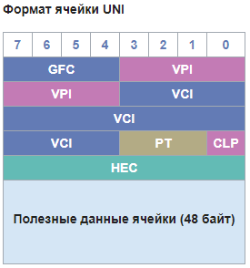
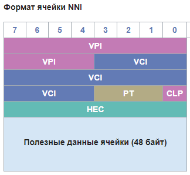
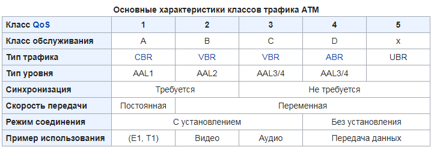

ATM
ATM (asynchronous transfer mode — асинхронный способ передачи данных) — сетевая высокопроизводительная технология коммутации и мультиплексирования пакетов. Пакеты представляют собой ячейки (англ. cell) фиксированного размера в 53 байта, где первые 5 байт используются под заголовок. Является разновидностью быстрой коммутации пакетов (англ. fast packet switching).
В отличие от синхронного способа передачи данных (STM — англ. synchronous transfer mode), ATM лучше приспособлен для предоставления услуг передачи данных с сильно различающимся или изменяющимся битрейтом.
Базовые принципы
Сеть ATM строится на основе соединенных друг с другом АТМ-коммутаторов. Технология реализуется как в локальных, так и в глобальных сетях. Допускается совместная передача различных видов информации, включая видео, голос.
Ячейки данных, используемые в ATM, меньше в сравнении с элементами данных, которые используются в других технологиях. Небольшой, постоянный размер ячейки, используемый в ATM, позволяет:
- Совместно передавать данные с различными классами требований к задержкам в сети, причём по каналам как с высокой, так и с низкой пропускной способностью;
- Работать с постоянными и переменными потоками данных;
- Интегрировать на одном канале любые виды информации: данные, голос, потоковое аудио- и видеовещание, телеметрия и т. п.;
- Поддерживать соединения типа точка–точка, точка–многоточка и многоточка–многоточка.
Технология ATM предполагает межсетевое взаимодействие на трёх уровнях.
Для передачи данных от отправителя к получателю в сети ATM создаются виртуальные каналы, VC (англ. Virtual Circuit), которые бывают трёх видов:
- постоянный виртуальный канал, PVC (Permanent Virtual Circuit), который создаётся между двумя точками и существует в течение длительного времени, даже в отсутствие данных для передачи;
- коммутируемый виртуальный канал, SVC (Switched Virtual Circuit), который создаётся между двумя точками непосредственно перед передачей данных и разрывается после окончания сеанса связи.
- автоматически настраиваемый постоянный виртуальный канал, SPVC (Soft Permanent Virtual Circuit). Каналы SPVC по сути представляют собой каналы PVC, которые инициализируются по требованию в коммутаторах ATM. С точки зрения каждого участника соединения, SPVC выглядит как обычный PVC, а что касается коммутаторов ATM в инфраструктуре провайдера, то для них каналы SPVC имеют значительные отличия от PVC. Канал PVC создаётся путём статического определения конфигурации в рамках всей инфраструктуры провайдера и всегда находится в состоянии готовности. Но в канале SPVC соединение является статическим только от конечной точки (устройство DTE) до первого коммутатора ATM (устройство DCE). А на участке от устройства DCE отправителя до устройства DCE получателя в пределах инфраструктуры провайдера соединение может формироваться, разрываться и снова устанавливаться по требованию. Установленное соединение продолжает оставаться статическим до тех пор, пока нарушение работы одного из звеньев канала не вызовет прекращения функционирования этого виртуального канала в пределах инфраструктуры провайдера сети.
Для маршрутизации в пакетах используют так называемые идентификаторы пакета. Они бывают двух видов:
- VPI (англ. virtual path identifier) — идентификатор виртуального пути (номер канала)
- VCI (англ. virtual channel identifier) — идентификатор виртуального канала (номер соединения)
Структура ячейки


- GFC = Generic Flow Control (4 бита) — общее управление потоком;
- VPI = Virtual Path Identifier (8 бит UNI) или (12 бит NNI) — идентификатор виртуального пути;
- VCI = Virtual circuit identifier (16 бит) — идентификатор виртуального канала;
- PT = Payload Type (3 бита) — тип данных;
- CLP = Cell Loss Priority (1 бит) — уровень приоритета при потере пакета; указывает на то, какой приоритет имеет ячейка (cell), и будет ли она отброшена в случае перегрузки канала;
- HEC = Header Error Control (8 бит) — поле контроля ошибок.
- UNI = User-to-Network Interface — интерфейс пользователь-сеть. Стандарт, разработанный ATM Forum, который определяет интерфейс между конечной станцией и коммутатором в сети ATM.
- NNI = Network-to-Network Interface — интерфейс сеть-сеть. Обобщённый термин, описывающий интерфейс между двумя коммутаторами в сети.
Классы обслуживания и категории услуг
Определено пять классов трафика, отличающихся следующими качественными характеристиками:
- наличием или отсутствием пульсации трафика, то есть трафики CBR или VBR;
- требованием к синхронизации данных между передающей и принимающей сторонами;
- типом протокола, передающего свои данные через сеть ATM, — с установлением соединения или без установления соединения (только для случая передачи компьютерных данных).
CBR не предусматривает контроля ошибок, управления трафиком или какой-либо другой обработки. Класс CBR пригоден для работы с мультимедиа реального времени.
Класс VBR содержит в себе два подкласса — обычный и для реального времени (см. таблицу ниже). ATM в процессе доставки не вносит никакого разброса ячеек по времени. Случаи потери ячеек игнорируются.
Класс ABR предназначен для работы в условиях мгновенных вариаций трафика. Система гарантирует некоторую пропускную способность, но в течение короткого времени может выдержать и большую нагрузку. Этот класс предусматривает наличие обратной связи между приёмником и отправителем, которая позволяет понизить загрузку канала, если это необходимо.
Класс UBR хорошо пригоден для посылки IP-пакетов (нет гарантии доставки и в случае перегрузки неизбежны потери).
